Spectral Selection
Among other purposes, spectral selection and editing can be used for cleaning up unwanted sound, enhancing certain resonances, changing the quality of a voice or removing mouth sounds from voice work.
All of the time-based selection techniques (horizontal selection) are still available when making a spectral selection.
| Spectral Selection is disabled by default.
In order to use Spectral Selection you must first enable the Enable Spectral Selection checkbox in either:
|
Making a Spectral Selection
Here is a track with a few seconds of speech shown in waveform view:
- 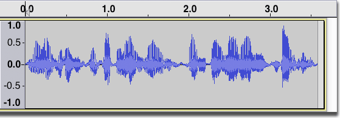
To define a time range change the track to Spectrogram view, hover at a vertical position that you want to be the approximate center frequency to act on then click and drag a selection horizontally. A horizontal line appears beside the I-Beam mouse pointer that defines the center frequency.
Drag vertically (with or without continuing to drag horizontally) to define the bandwidth (range of frequencies) to be acted on. A "box" containing a combined frequency and time range is now drawn in a colored tint as shown below (the exact color of the tint will depend on the version of Audacity and the settings of your monitor):
- 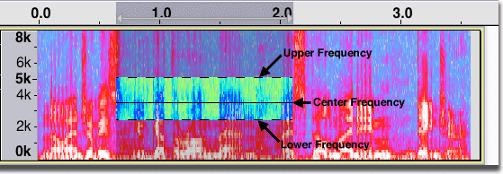
If either the low or high frequency limits are not defined, no center frequency will be shown. In the illustration below, the selection has been dragged from about 5000 Hz to the bottom of the track. The high frequency selection is about 5000 Hz and the low frequency selection is not defined, so the selection includes everything below 5000 Hz:
- 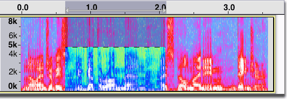
If the selection is dragged up to the top of the track, then the high frequency will be undefined, so the selection will include everything above the low frequency limit.
If neither the upper or lower frequency limits are defined, then the full frequency range is selected, just like a 'normal' audio selection.
Adjusting a Spectral Selection
When you hover the mouse pointer over the center frequency line it changes to a double triangle to show that the center frequency can be dragged. When you click and drag to move the center frequency and the current frequency range to a new position, the center frequency will snap to frequency peaks. To move the center frequency smoothly (without snapping to frequency peaks) hold down the Shift key then left click and drag.
- 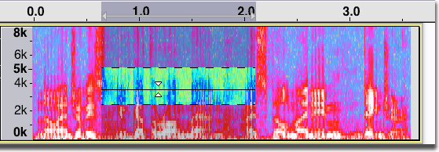
To adjust the bandwidth of the selection hover the mouse over the upper or lower boundary until the pointer changes to a double triangle then left click and drag. This moves the upper and lower frequency boundaries so they remain equally spaced around the center frequency (thus not changing the center frequency).
To adjust the upper or lower boundary while holding the opposite boundary constant hold down the Shift key then hover the mouse near the upper or lower boundary until the pointer changes to a single triangle then click and drag (this will change the center frequency).
- When the lower boundary is at 0 Hz you can drag that boundary up by carefully hovering the mouse near the bottom of the track until the single down-arrow pointer appears then left clicking and dragging up.
- When the upper boundary is at the Nyquist frequency of the track you can drag that boundary down by carefully hovering the mouse near the top of the track until the single up-arrow pointer appears then left clicking and dragging down.
- You can use the Spectral Selection Toolbar to create and/or precisely adjust a spectral selection using the keyboard.
Storing the frequency range in a Label
If you add a label at a time region, that region's Low Frequency and High Frequency are stored in the label and recalled when you select the label. Similarly if you add a label at the cursor position, the frequency at which you clicked to set the cursor is stored in the label.
If you subsequently want to change the Low Frequency and High Frequency stored by the label, select and right-click the label (or use the Menu key) then choose "Edit..." to open the label in Labels Editor.
Toggling Spectral Selection on and off
Press the shortcut Q key to change from the last selected spectral selection (one that has at least the lower or upper boundary defined) to one where the lower boundary is 0 Hz and the upper boundary is the Nyquist frequency of the track. In this case there is no longer a spectral selection (all frequencies are selected which is the same as making a time selection in waveform view). Press the Q key again to restore the previous upper and lower boundaries. This command works whether in a Spectrogram view or not.
Spectral editing
Spectral edit multi tool
Use this to greatly attenuate or remove part of the frequency range in the spectral selection, for example to repair damaged audio. Depending on how the track is displayed and what spectral selection has been made, this effect will do one of the following:
- When the track is not in Spectrogram view with Spectral Selection enabled, an error message will be displayed.
- When the spectral selection has a center frequency and an upper and lower boundary this effect performs as a notch filter with the center frequency defined by the center frequency of the spectral selection and the width defined by the upper and lower boundaries of the spectral selection.
- When the lower frequency bound of the spectral selection is undefined, this effect performs a high pass filter with a rolloff of 12 dB/octave and with the cutoff frequency defined by the upper boundary of the spectral selection. Note that setting the lower frequency bound to 0 Hz will not apply the filter because 0 Hz is zero, not nil (undefined).
- When the upper frequency bound of the spectral selection is undefined, this effect performs a low pass filter with a rolloff of 12 dB/octave and with the cutoff frequency defined by the lower boundary of the spectral selection.
- When both the upper and lower frequency bound of the spectral selection are undefined, an error message will be displayed. You should go back and define one or both frequency bounds.
If the attenuation is not sufficient, you can use Ctrl + R to repeat the effect.
You can see some specific examples of this effect on the Spectral edit multi tool page.
Spectral edit parametric EQ
- 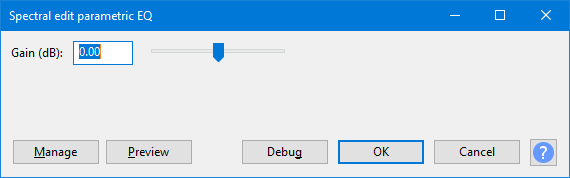
Use this like an Equalizer to modify the tone quality, boosting or reducing the amplitude of the selected frequency band using the Gain control. As with an Equalizer, frequencies outside the selected band may be boosted or reduced, but less so than those within the frequency band.
Depending on how the track is displayed and what spectral selection has been made, this effect will do one of the following:
- When the track is not in Spectrogram view with Spectral Selection enabled, an error message will be displayed.
- When the spectral selection has a center frequency and an upper and lower boundary this effect performs a band cut or band boost according to the value entered in the "Gain (dB)" control. The center frequency is defined by the center frequency of the spectral selection, the bandwidth is defined by the upper and lower boundaries of the spectral selection.
- When either the upper or lower frequency boundary is undefined, an error message will be displayed to that effect. If the lower frequency boundary is 0 Hz there is no center frequency or bandwidth and an error message will state that the lower frequency must be above 0 Hz.
You can see some specific examples of this effect on the Spectral edit parametric EQ page.
Spectral edit shelves
- 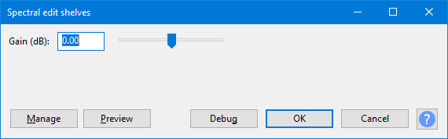
A shelf filter curve is flat at both ends rather than flat only at the frequencies being passed. Use these filters when you don't want to reduce the lowest bass or highest treble frequencies in the spectral selection as much as you would with a standard high pass or low pass filter, or if you actually want to boost either the low or high frequencies respectively.
Depending on how the track is displayed and what spectral selection has been made, this effect will do one of the following:
- When the track is not in Spectrogram view with Spectral Selection enabled, an error message will be displayed.
- When the spectral selection begins at 0 Hz or its lower bound is undefined, this effect applies a low frequency shelving filter with the half-gain frequency (the mid-point of the gain section of the curve) defined by the upper boundary of the spectral selection. The gain control sets the amount of low-frequency boost or cut. This is similar to adjusting the bass control on a stereo.
- When the spectral selection ends at the Nyquist frequency of the track or its upper bound is undefined, this effect applies a high frequency shelving filter with the half-gain frequency defined by the lower frequency of the spectral selection. The gain control sets the amount of high-frequency boost or cut. This is similar to adjusting the treble control on a stereo.
- When the spectral selection has a center frequency and upper and lower frequency boundaries this effect applies both low- and high-frequency shelving filters. In this case the half-gain frequency of the low shelving filter is defined by the lower frequency boundary of the spectral selection and the half-gain frequency of the high shelving filter is defined by the upper frequency boundary of the spectral selection. The gain control sets the amount of boost or cut between the two frequency boundaries.
- When the spectral selection begins at 0 Hz and ends at the Nyquist frequency, applying the effect will not change the audio. If the start and end of the selection are both undefined, an error message will be displayed. You should go back and define one or both frequency bounds.
You can see some specific examples of this effect on the Spectral edit shelves page.
| Due to a limitation in Nyquist effects the effect dialog will be displayed before any error message. |
Example of using spectral editing to remove an unwanted whistle noise
Here is the same audio as in the images above, but this time contaminated by an annoying high-frequency whistle. You can see the whistle just above 5 kHz.
- 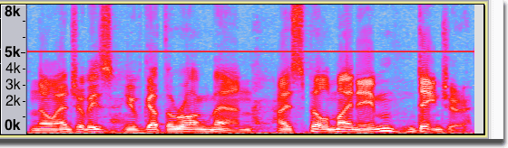
Start by making a rough selection around the whistle:
- 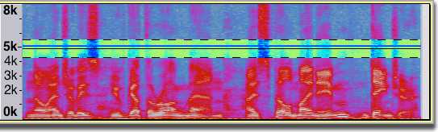
Click and drag on the vertical scale to zoom in on the offending frequencies:
- 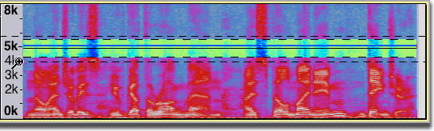
The center frequency line is close (but not exactly on) the whistle and the range of frequencies extends too far above and below the whistle:

Snap the center frequency line to the whistle by hovering the mouse over the center line until the double triangle cursor appears, then click and drag to snap the center line to the whistle frequency:
- 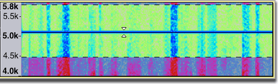
Hover the mouse over the upper or lower boundary until the double-triangle cursor appears, then click and drag to adjust the bandwidth of the selection to just cover the whistle:
- 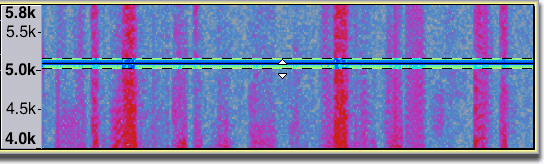
Finally, select which performs a notch filter effect on the selected frequencies.
- 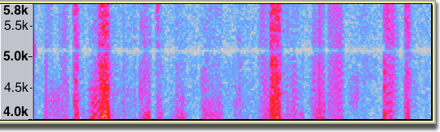
Limitations
The permitted upper frequency of the spectral selection is determined by the Project Rate and not by the track sample rate. Therefore if a project includes a track that has a lower sample rate than the project rate, Spectral Selection Toolbar could display an "illegal" frequency selection above the Nyquist frequency for the track at the lower project rate. Audacity will disregard this "illegal" selection when running Spectral edit effects.